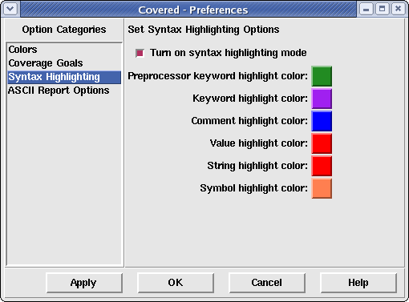

The syntax highlighting preferences pane allows the user to adjust the syntax highlighting mode and colors for any displayed Verilog source code.
Figure 1. The Syntax Highlighting Preferences Pane
This frame allows the user to specify if syntax highlighting should be performed in all Verilog source viewers or not. When the square to the left of the Turn on syntax highlighting mode is selected, syntax highlighting will occur; otherwise, it will not perform syntax highlighting. The various colored buttons below the selection mode allow the user to select the foreground color of the text associated with its specified syntax type (Comments, Preprocessor Keywords, Verilog Keywords, Strings, Constant Values, and Operation Symbols). Simply click on one of the buttons to change its color. Doing so will cause a color selection window (see Figure 2 above) to be displayed.
If the syntax highlighting mode is disabled by the user, the color selection buttons will be disabled.